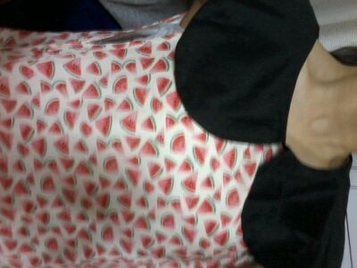

ほぉ〜〜〜いっ・ω・= )))
ろってぃ-でぇ〜す♪
今日は
東京にての個別握手会でした。★
本当 すっっっんごい !
楽しかったです^^
皆様のおかげでありますω♪
皆様に
応援してもらい、
励ましてもい、
雑談したり
アドバイスをもらったり
たくさんお話できて
嬉しかったです*^ω^*
元気頂きましたぁ〜〜
にっ(^^)v
あっ、ヘアスタイル、
アップして巻いてるの
どうでしたかね・ω・`?
でねっ、今日の私服は , , ,
ういっ)))
♪

スイカ柄のワンピース〃ω〃
夏っぽくて、
原宿で買ったんだけど、
見た瞬間、すぐ手に取って
買ったものです♪
形がちょっとレトロっぽいと
ゆーか、
エリが大きくて
色合いとかスイカ柄だし
ん〜、
髪おろしたらちょっと
重たくなるかもしんないから
ポニーテールしよっ〃・ω・〃
って思ったんです♪にっ笑
まひろのマミーが
このワンピースの雰囲気、
お母さん達が子供の頃
着てた感じのワンピースみたいで
懐かしいと言っていました(^-^)
皆様 今日は
本当に本当に
ありがとうございましたっ )))
大好きっっ・ε・〃
今日とった変な写真
今度載せちゃおっかなε・*笑
また 更新します。
以上っ))
ろってぃ-でした のし(⌒‐⌒)